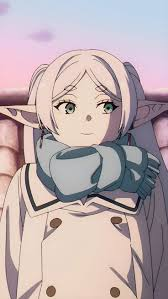

Frieren: Beyond Journey's End
Released: September 29, 2023
Genre: Fantasy, Adventure, Drama
After the defeat of the Demon King, elven mage Frieren and her heroic party go their separate ways. With her long lifespan, Frieren barely ages while her comrades grow old and pass away — leaving her with questions about life, emotions, and her place in the world.
Embarking on a new journey with a new generation, Frieren sets out to understand what it means to be human and discover the magic of bonds, memories, and farewells.
Cast

Frieren
Voice: Atsumi Tanezaki
Fern
Voice: Kana Ichinose
Stark
Voice: Chiaki Kobayashi
Heiter
Voice: Hiroki Touchi